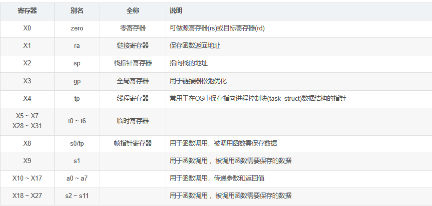

资料来源：课件、黑书
upd：满绩了，题目讲实话不算容易，幸好做了比较充分的复习。
一. ALU算术逻辑单元
- 基础知识
- 对于无符号数，那么每一位都是可以用来表示数据的。比如64的无符号数max值为2 ^ 64 - 1
- 对于有符号数，统一采用补码形式存储在计算机中。
- 原因如下：
- 如果最高位为符号位，其余位采用原码表示，那么0就有0 000...00和1 000...00两种表示方法，不能唯一确定，不好
- 那么取个反呢？也就是最高位仍是符号位，如果想表示一个正数x的相反数，就直接把x的二进制全部取反即可。
- 取反本质上就相当于INT_MAX - x，那么正数范围x是0 ~ INT_MAX，则取反也是一一对应的，所以可以用x取反的方式得到x的相反数，也就得到了-0 ~ -INT_MAX的负数表示。
- 但是老问题仍然存在，对于+0，其二进制全部取反后得到1 111...11。所以0仍然存在两种表示方法，这不好
- 为了解决这个问题，取反后加1就好了。本质上就是-(INT_MAX - x + 1)。对于+0，是0 000...00，对于-0，仍然是0 000...00。此时，正数范围x是0 ~ INT_MAX。当x取0的时候，-0表示为0 000.00，当x取INT_MAX时，-x表示为1 000...01。你会发现1 000...00这个数没被用到。所以多出来的这个二进制数，我们用它来表示-(INT_MAX+1)
- 对于正数，符号位为0，其余位该咋样咋样，跟原码一样。所以64位的最大值为2 ^ 63 - 1
- 对于负数，其二进制是其相反数全部取反+1。64位的负数范围本应是[-INT_MAX, -0]，但因为1 000...00这个数没人对应。所以用它来对应-(INT_MAX+1)。所以负数范围是[-(INT_MAX+1), -0]
- 原因如下：
- 加法溢出（减法溢出同理）
- 正数 + 负数，不会溢出
- 正数 + 正数，符号位为1，溢出
- 负数 + 负数，符号位为0，溢出
- 乘法
- 朴素法：本质就是二进制分解，将乘数二进制分解，每次看最后一位是不是1，若是，往结果里加上一个被乘数（注意，每分解一次被乘数就要左移一位）
- 优化法：本质还是二进制分解，但聪明的就是把结果和乘数写一起，初始化的时候在乘数(结果)的前面预留x位（x为被乘数的位数），然后每次检查结果最后一位，若是1，从最高位开始加上一个被乘数，然后结果右移一位，被乘数x2；若是0，则结果直接右移一位，被乘数x2
- 除法（建议多练几个样例练练手）
- 恢复除数法朴素法
- 除数低位补0，然后被除数对着除数减，减成功就在结果顶一个1出去，没成功就顶一个0出去。直到除数变为1时结束
- 恢复除数法优化法
- 除数不动，然后被除数高位补0，然后高位对着除数减，减成功了就往被除数屁股后塞个1进来，没成功就往被除数屁股后塞个0进来。直到原本的被除数都被减过一遍后（最后一次比较完后高位减完后，低位左移，塞屁股然后走人）
- 加减交替法
- 初始化是被除数高位补0，然后高四位直接减除数
- 之后的每一步，直接看被除数符号位是不是1，是1直接屁股塞个0然后高四位加余数。不是的话屁股塞个1然后高四位减余数。直到原本的被除数都被减过一遍后（最后一次判断完屁股塞什么后，直接低位左移然后塞完屁股走人）
- 恢复除数法朴素法
- IEEE754
- S是阶符、E是阶码、M是尾数
- 单精度
- E = e + 127，e是真实指数
- \(1 \le E \le 254(127 * 2)\)
- 8位阶码，共32位
- 双精度
- E = e + 1023
- \(1 \le E \le 2046(1023 * 2)\)
- 11位阶码，共64位
二. 指令集ISA
| R型指令 | I型指令 | S型指令 |
|---|---|---|
| add rd rs1 rs2 | addi rd rs1 imm | sw rs2 imm(rs1)（将rs2里的东西赋值到rs1 + imm里） |
| sub rd rs1 rs2 | subi rd rs1 imm | |
| and rd rs1 rs2 | andi rd rs1 imm | |
| or rd rs1 rs2 | ori rd rs1 imm | |
| xor rd rs1 rs2 | xori rd rs1 imm | |
| sll rd rs1 rs2 | slli rd rs1 imm (左移imm位，zero-extend) | |
| srl rd rs1 rs2 （左移rs2位，zero-extend） | srli rd rs1 imm（右移imm位，zero-extend） | |
| sra rd rs1 rs2 （右移rs2位，sign-extend） | srai rd rs1 imm（右移imm位，sign-extend） | |
| slt rd rs1 rs2 （rs1小于rs2吗，带sign） | slti rd rs1 imm（rs1小于imm吗，带sign） | |
| sltu rd rs1 rs2（rs1小于rs2吗，不带sign） | sltiu rd rs1 imm（rs1小于imm吗，不带sign） | |
| lw rd imm(rs1)（将rs1 + imm的数据加载到rd里） | ||
| jalr rd imm(rs1)（将pc + 4赋值给rd，pc赋值为rs1 + imm） |
| B型指令 | U型指令 | J型指令 |
|---|---|---|
| beq rs1 rs2 label（若rs1 == rs2，PC被赋值为label） | lui rd imm（rd = imm << 12） | jal rd imm（rd = PC + 4, PC = PC + imm） |
| bne （not equal） | auipc rd imm（rd = (imm << 12) + PC） | |
| bge （greater or equal）signed | ||
| bgeu （greater or equal）nosigned | ||
| blt （less than）signed | ||
| bltu （less than）nosigned |
I、S、B、U、J，除了I是有/无符号扩展，其余都是有符号扩展，U是先左移12位再有符号扩展
- C转汇编练习
- x0：固定为0，可写可读但是始终为0
- x1：返回地址寄存器，调用函数的时候自动更新为调用语句的地址
- x10/x11：返回结果寄存器，用来保存函数里计算的值
- x5-7/x28-31：临时寄存器，随便用
- x8-9/x18-27：保存寄存器，在函数调用中需要保存恢复（入栈）
- 读取字符是lbu，存储字符是sb
- 函数中return的固定格式：jalr x0, 0(x1)
- ppt4(15)
- ppt4(16)
 ppt4(25)
ppt4(25)- ppt4(38)
三. 单周期数据通路
CI：指令数 CPI：每条指令所需的周期数 f：时钟频率 T = \(\frac{1}{f} \cdot (CI \cdot CPI)\)：时间
1GHz = 10^3MHz = 10^9Hz；1ns = 10^3ps = 10^9s
1ns = (1 / 1GHz)
系统加速比 = \(\frac{改进前的总时间}{改进后的总时间}\) = \(\frac{改进前的总时间}{改进前的总时间 \cdot 不可改进部分的占比 + \frac{改进前的总时间 \cdot 可改进部分的占比}{改进部分的加速比}}\)，若用吞吐量计算的话就是分子分母反过来->\(\frac{改进后的吞吐量}{改进前的吞吐量}\)
关键路径分析
-
俩寄存器从readdata1/2出来然后进alu运算，得到结果直接传回registers
-
readdata1是首地址，immgen是偏移量，经alu运算后得到地址，然后ram的readdata读到数据后传回registers，赋值给rd
-
readdata2是要写入ram的数据，直接流入ram的writedata，readdata1是首地址，immgen是偏移量，经alu运算后得到地址
-
readdata1/2分别是rs1, rs2，经alu判断是否相等后zero信号给到pc那边的mux。label通过immgen传到mux
-
对于寄存器（pc、InstrMem、Registers、DataMem），如果走完全程就加整个的延迟，如果只是往里写东西就只加一个Set up，如果只是读东西就只加一个read。
- sw的关键路径：pc_read + InstrMem + Registers + ALU + Setup
四. 流水线数据通路
流水线的五个阶段
IF：从内存中获取指令
ID：指令解码和寄存器读取
EX：执行操作或计算地址
MEM：访问内存操作数
WB：将结果写回寄存器
流水线数据通路的延迟
时钟周期(每个cycle的时间) = max{ lat(IF), lat(ID), lat(EX), lat(MEM), lat(WB) }
忽略了流水线的装载和排空
忽略了寄存器的建立时间
这里要注意区分时钟周期、延迟的概念：
对于单周期数据通路，其时钟周期就是它的延迟
对于流水线数据通路，其时钟周期是max{ 五个阶段的延迟 }，其延迟是sum{ 五个阶段的延迟 }
画流水线图
传统流水线图
直接IF、ID、EX、MEM、WB五个阶段哐哐往上写就好了
资源调度流水线图
固定的五套件是IM（instr_memory）、Reg、ALU、DM（data_memory）、Reg。如果写就前半部分标黑，如果读就后半部分标黑，如果都用到了就都标黑。没用到就标白（例如sub、add没用到DM）
插气泡的写法
冒险
- 结构冒险：就是抢硬件资源，比如若将指令和数据放在一个存储器，那么IF阶段和MEM阶段就会同时用存储器，产生结构冒险
- 数据冒险：
- 产生数据依赖就会产生数据冒险
- 三种数据依赖
- 写后读（RAW）
- 即前面写的还没更新，后面就读了，结果读出来不符合原本预期
- 无lw/sw语句
- 也就是对于同一个寄存器，WB的CC必须在ID的CC之前，之后就会存在RAW依赖。WB和ID的CC相同是否可行呢？其实是可以的。因为通常默认一个CC内先下降沿再上升沿，下降写，上升读，所以同一个CC内，先写后读，数据是可以正确传递的，所以同一个CC也可以。
- 总结解决办法就是写读之间间隔的语句要>=2（不包括它俩），或者插bubble，或者前推
- 读后写（WAR）
- 即前面还没读到，后面就写进去了，结果读出来不符合原本预期
- 因为五级流水读取ID在第二阶段，写WB是第五阶段，所以不会发现读后写的冒险。只有在乱序执行的时候才会出现
- 写后写（WAW）
- 假设三条指令前两条写，后一条读，按理说读出来的是最后一条写后的结果，但如果第一个写最后才执行，那么就读出来一个错误的值。
- 五级流水仍是顺序执行的，所以不会有WAW冒险。只有在乱序执行的时候才会出现
- 写后读（RAW）
- 前推MUX控制
- alu那，俩操作数，有不同的选择
- F0 = (EX/MEM.RegWrite && EX/MEM.Rd != 0 && ID/EX.Rs == EX/MEM.Rd) EX/MEM前推到ID/EX.Rs
- F1 = (MEM/WB.RegWrite && MEM/WB.Rd != 0 && ID/Ex.Rs == MEM/WB.Rd) MEM/WB前推到ID/EX.Rs
- 如果F0=0，F1=0就不前推，不可能俩都为1，其中一个为1就前推对应的阶段到ID/EX.Rs
- Load-Use冒险检测
- Hazard = (ID/EX.MemRead && ID/EX.Rd == IF/ID.Rs)
- 要从datamemory读东西并且最终要写入的寄存器会被下面的语句用到，那么就存在load-use冒险。
- 隔一条的load-use冒险可以前推解决，不间隔的load-use冒险前推解决不了
- 控制冒险：
- 就是beq指令没执行完前后面的指令不给执行，但是beq到EX/MEM阶段才知道是否执行，而此时后面的三条指令已经塞进来了，所以就会发生控制冒险
- 解决方案一：插三条bubble
- 解决方案二：如果发现要执行跳转则flush
ID/IF/EX阶段（因为后面的指令最多执行了ID/IF/EX三个阶段，所以刷新掉即可）
- If (EX/MEM.branch & EX/MEM.Zero) IF.Flush=True; ID.Flush=True; EX.Flush=True;
- 当然，其实beq的俩数比较不需要放在alu后比较，其实readdata刚出来，也就是在ID的结尾就可以比较了。所以我们可以把比较前移至ID阶段
- if (IF/ID.IR == beq && Reg[Rs1] == Reg[Rs2]) IF.Flush = True;
- 此时仍会出现冒险，解决方案如下
- 解决方案一：插一条bubble
- 解决方案二：若发现要执行跳转，则flush掉IF/ID寄存器即可
- 还有另一种控制冒险，就是jal指令，跟前移后的beq一样，也是到ID阶段就知道跳转地址了，所以也是flush一下ID/EX寄存器即可
- if (IF/ID.IR == jal[R]) IF.Flush = True;
- 在学了flush技巧后，前面我们没解决的load-use冒险也可以用flush技巧来解决了，具体来说如下：
- 在检测上发生load-use冒险时：Hazard = (ID/EX.MemRead && ID/EX.Rd == IF/ID.Rs)
- 将ID/EX寄存器控制字段flush掉
- 阻止PC寄存器更新
- 阻止IF/ID寄存器指令字段更新
流水线性能分析
可以发现，多插一个bubble就会多一个时间周期才能完成
而且可以发现一个规律，插入bubble后的\(CPI = 1 + \frac{bubble数}{指令数}\)
那么下面这题就可以理解了
只有beq、jal、ld会产生惩罚，题目说了没有结构冒险，所以只考虑ld。只有40%load，一个load指令会bubble一个周期，所以假设指令数是x，那么bubble数就是0.4x，代入公式：CPI = 1 + 0.4x / x = 1.4，然后T = CPI * 时钟周期 = 1.4 * 1.1 = 1.54
-
- 条件分支beq 20%，无条件跳转jal 5%。跳转地址在ID阶段解决意味着会延迟一个周期跳转，跳转条件在EX解决意思是到EX/MEM才知道是否要跳转，也就是延迟3个周期跳转。
- 那么假设静态预测不跳转，CPI = 1 + 0.05 * 1 + 0.2 * 3 = 1.65
- 如果假设静态预测跳转，CPI = 1 + 0.05 * 1 + 0.2 * 1 = 1.25
五. 动态分支预测
考点：根据双模的计数器的状态跳转图、或者历史的预测情况、历史的跳转情况，分析出最近的十次他能预测成果的次数
六. Cache
- AMAT（平均访问时间）
- \(T = p * T_c + (1 - p) * (T_c + T_m)\)
- p是命中率，\(T_c\) 是访问时间，\(T_m\)是缺失代价访问时间
- 主存与cache
- 对于主存地址，俩部分，主存块号m位，块内地址b位。这个地址可以定位到一个存储单元
- 对于cache行的内容，tag位 + 有效位 + 脏位 + LRU位 + 数据。
- 若想在cache中定位到一个存储单元，需要从主存地址中解析出cache行号和块内地址
- 地址映射表 = 标记阵列 = (tag位 + 有效位 + 脏位 + LRU位)
- 映射方式
- 直接映射
- cache行号 = 主存块号 % cache行数
- 其实主存块号对应的cache行号，就是m位主存块号的低c位。高m - c位就作为tag位
- 技巧：tag位 = log2(主存容量 / cache容量)
- 全相联映射
- 因为全相联是随便放，所以给你一个主存地址，是无法定位到放到cache中的哪一行的
- 所以我们将主存地址的m位全部作为tag位
- 组相联映射
- 主存m位块号里的低c位就是对应的组号，高m - c位就作为tag位
- 可以发现组相联也是无法定位到具体某一行的
- 直接映射
- 关联度
- 定义：一个主存地址可能被存放到cache中的可能位置个数
- 关联度越低，命中率越低，判断是否命中的开销越小
- 直接映射：1
- 全相联映射：cache行数
- 组相联映射：组路数
- 替换算法
- LRU：选择近期最久没被实用的块被替换
- 算法实现：通过LRU位实现（计数器）
- 一致性问题
- 写命中（要修改的存储单元在cache中）
- 写直达（同时更新cache和主存）
- 写返回（更新cache和脏位，当被替换出去的时候再更新主存）
- 写不命中（要修改的存储单元不在cache中）
- 写分配法（在主存里更新完后copy一份到cache中）
- 写不分配法（在主存里更新完后就结束）
- 写命中（要修改的存储单元在cache中）
六. 汇编补充
在线RISC-V汇编编写网站：venus
RISC-V汇编转机器码网站：Online RISC-V Assembler
更多指令细节请参考：CS 61C Reference Card
RISC-V的大部分指令长度固定，为32位。每条指令都是由32个0/1序列组成。
寄存器：RISC-V中，寄存器是处理器内部用于存储数据的小存储单元。它们可以非常快速地被访问和写入，比起访问主内存来说速度要快得多。
RISC-V定义了一组32个通用寄存器，编号从0到31。在代码中就是x0, x1, x2, ..., x31。

R(register)型指令：操作寄存器操作的指令
- 格式：

- opcode操作码，rd目标寄存器号，rs1/rs2第一/二个源寄存器号，funct3附加操作码，funct7附加操作码。
- add x3, x1, x2（+）
- sub x3, x1, x2（-）
- and x3, x1, x2（&）
- or x3, x1, x2（|）
- xor x3, x1, x2（^）
- 格式：
I(immediate)型指令：寄存器与常数操作的指令
- 格式：

- immediate立即数。
- addi x1, x2, 10
- slti x1, x2, 15：如果x2小于15，将x1设置位1。否则设置为0
- andi x1, x2, 0xFF：寄存器与常数进行&操作
- ori x1, x2, 0xFF
- xori x1, x2, 0xFF
- slli x1, x2, 2（将x2左移2位结果存到x1中）
- ld x1, 0(x5)：从内存地址 x5+0 处加载 64 位的值到 x10
- 格式：
S(store)型指令：寄存器与内存操作的指令
- 格式：

- rs1访存基址寄存器编号，r2源操作数寄存器编号，imm立即数（表示从基址开始的偏移量。
- sw x1, 10(x2)：将x1内容存储到x2为基址，偏移量为10的内存地址中
- 格式：
B(branch)型指令：程序的有条件跳转指令
- 格式：
- imm立即数：表示要跳转的语句的地址。
- beq x1, x2, label：如果x1==x2，程序跳转到label处
- blt(Branch less than) x1, x2, label：如果x1 < x2，程序跳转到label处
- bgt(Branch greater than) x1, x2, label：如果x1 > x2，程序跳转到label处
- bgtz(Branch greater than zero) x1 label：如果x1大于0，程序跳转到label处
- bgez(Branch greater or equal to zero) x1 label：如果x1大于等于0，程序跳转到label处
J(jump)型指令：程序的无条件跳转指令
- 格式：
- 也可以叫UJ(Unconditional Jump)指令。
- jr rd：跳转到rd寄存器存的地址那里
- jal x1, offset：跳转到当前指令地址加上offset的位置，并将下一条指令的地址存入x1中
U(upper immediate)型指令：将20位立即数加载到寄存器的高位
- 格式：

- lui x1 imm：将20位立即数imm加载到x1的高20位，低12位清零
- 格式：
- 练习题：写一个斐波那契数列程序
1 | int fib(int n) { |
1 | fib: |